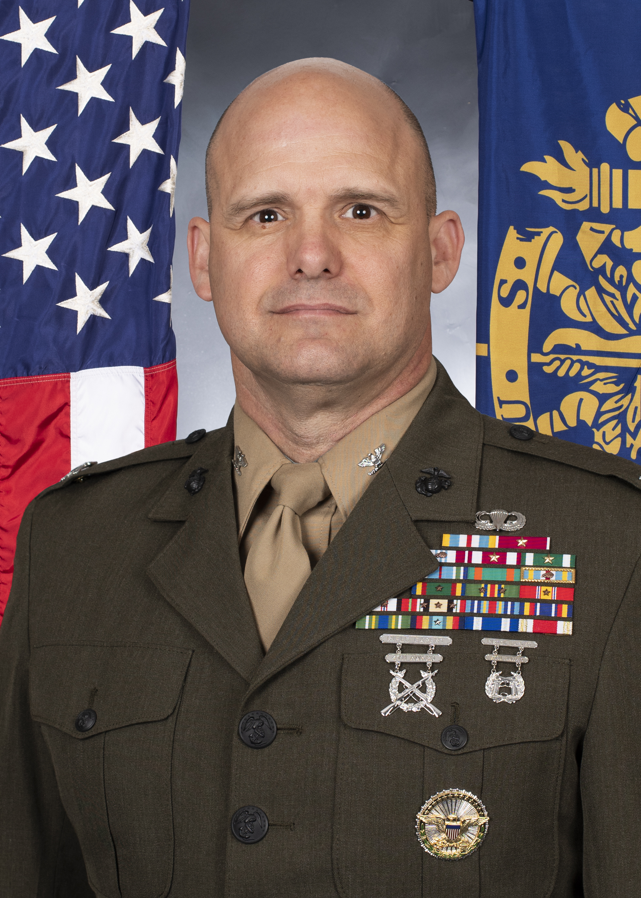

Senior Marine
Col Eric A. Reid
Senior Marine Representative and Dean of the School of Humanities & Social Sciences
- Email: ereid@usna.edu
Colonel Reid enlisted in the Navy in 1992 and attended the Naval Academy Preparatory School, earning an appointment to the U.S. Naval Academy, where he graduated in 1997 with an honors degree in History. He is an infantry officer.
From 1998 to 2001, he commanded an 81mm mortar platoon and an anti-armor platoon and deployed as a weapons company Executive Officer for a unit deployment to Okinawa, Japan and a Marine Expeditionary Unit (MEU) deployment to the Mediterranean Sea. Following his first Fleet Marine Force (FMF) tour, he was an instructor at The Basic School and Infantry Officer Course from 2001 to 2004 before attending resident Expeditionary Warfare School.
He returned to the FMF in 2005 to command Weapons Company, 3d Battalion, 1st Marines in Al Anbar Province, Iraq. He was assigned as aide-de-camp to the Commander, U.S. Marine Forces Central Command / Commanding General I Marine Expeditionary Force (MEF) in 2007 and 2008. Following that assignment, he returned to deploy as the Battalion Landing Team 3/1 Operations Officer on the 31st MEU in 2008.
In 2009, he attended resident Army Command & General Staff College before spending a year as a Congressional Fellow in the House of Representatives in 2010. In 2011, he reported to U.S. Central Command as the Afghanistan and Pakistan policy officer within the J-5. He later deployed as a NATO campaign planner in Kabul, Afghanistan before returning to Central Command to assume duties as the Strategic Analysis Branch Chief.
In 2014, he returned to the FMF as the Deputy G-3 at 2d Marine Division prior to commanding 1st Battalion, 2d Marines in 2015 and 2016. He was a 2016–17 National Security Affairs Fellow at the Hoover Institution, Stanford University. From March 2017 to March 2019, he served as a special assistant to the Secretary of Defense. He was the 2019–2020 Commandant of the Marine Corps senior fellow at the Brookings Institution. From June 2020 through June 2022, he was the III MEF G-5.
From June 2022 through June 2024, he served as the Manpower Plans, Programs, and Budget Branch Head within Marine Corps Manpower & Reserve Affairs. Colonel Reid assumed the duties as the Senior Marine Representative and Dean of the School of Humanities and Social Sciences at the Naval Academy in June 2024.
Colonel Reid holds master's degrees from the Johns Hopkins University School of Advanced International Studies, Boston University, Kansas State University, and the Army Command & General Staff College. He is a graduate of the MIT Seminar XXI program.